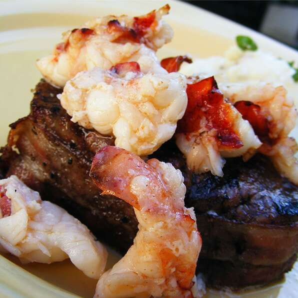

Lobster Colorado

Description
This is my family's favorite Christmas dinner. Elegant for dinner parties or a romantic diner for two. If you desire crabmeat instead of lobster, go for its!
Ingredients
- 4(8 ounce) filet mignon (beef tenderloin)
- Salt and pepper to taste
- 1/2 teaspoon garlic powder
- 4 bacon slices
- 1/2 cup butter, divided
- 1 teaspoon OLDBAY Seasoning
- 8 ounces lobster tail, cleaned and chopped
Steps
- Set oven to broil at 500 degrees F (260 degrees C)
- Sprinkle tenderloins allover with salt, pepper, and garlic powder. Wrap each filet with bacon, and secure with a toothpick. Place on a broiling pan, and broil to desired doneness, about 8 to 10 minutes per side for medium rare.
- While tenderlois are cooking, melt 1/4 cup of butter over medium heat with 1/2 teaspoon Old Bay seasoning. Stir in choped lobster meat, and cook until done. Spoon lobster meat over cooked tenderloins, and return them to the vroiler until the lobster meat begins to brown
- While the lobster is in the oven, heat the remaining 1/4 cup of butter in a small saucepan over medium-high heat, cook until it vrowns, turning thye color of a hazelnut. To serve, spoon the browned butter over the steaks, and sprinkle with the remaining Old Bay seasoning.